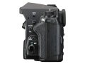
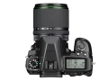
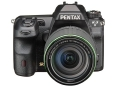

器材库 > APS及其以下画幅可换镜头数码相机 > K-3 II

规格总览
产品类型
APS画幅可换镜头数码相机
发布日期
2015-04-23
影像规格
影像传感器
CMOS
影像传感器尺寸
23.5×15.6mm
总像素
2471万
有效像素
2435万
低通滤镜
无
色彩空间
sRGB、AdobeRGB
静态图像格式
JPEG, RAW
静态图像尺寸
JPEG:L(24M:6016x4000)、M(14M:4608x3072)、S(6M:3072x2048)、XS(2M:1920x1280)RAW:(24M:6016x4000)
静态图像质量
RAW(14bit):PEF、DNG JPEG:★★★(优良)、★★(良好)、★(好)、RAW与JPEG可同时记录
短片格式
MPEG4-AVC/H.264
短片尺寸
Full HD (1920x1080、60i/50i/30p/25p/24p)、HD (1280x720、60p/50p/30p/25p/24p)
防抖系统
影像感应器位移式 (SR:Shake Reduction)
除尘系统
通过超声振动实现影像传感器清洁功能“DRII”及灰尘警告
镜头和对焦
镜头卡口
Pentax AF
兼容镜头
KAF3、KAF2(兼容电动变焦)、KAF、KA接环镜头
对焦系统类型
TTL相位差异自动对焦
对焦点
27点(中央25个对焦点为十字型)
对焦模式
单次AF(AF.S)、连续AF(AF.C)、自动选择AF (AF.A)
AF辅助灯/光
有
曝光控制
测光系统
采用8.6万像素RGB感应器的TTL开放光圈测光
测光范围
-3EV~20EV
曝光模式
绿色模式、程序、感光度优先、快门优先、光圈优先、快门与光圈优先、手动、长时间曝光、闪光灯同步速度、USER1、USER2、USER3
创意滤镜
彩提取、玩具照相机、怀旧、高对比度、明暗、反转颜色、高对比抽色、硬派单色
快门类型
电子控制，纵走式，焦平面快门
快门速度
自动:1/8000秒～30秒、手动:1/8000秒～30秒(1/3EV步长或1/2EV步长)、长时间曝光 驱动
闪光同步速度
1/180秒
曝光补偿
±5EV以1/3或1/2EV级调整
自动曝光锁
有
ISO感光度
ISO AUTO / 100～51200 (1EV步长、1/2EV步长或1/3EV步长)
白平衡
自动白平衡、复合自动白平衡、日光、阴影、阴天、荧光灯(D:日光色、N:日光白色、W:冷白色、L:暖白色)、白炽灯、闪光灯、CTE、手动(可保存3种设定)、色温设定(可保存3种设定)、拍摄影像设定
自拍
12秒、2秒
连拍
约8.3张/秒
取景器/显示屏
取景器
五棱镜取景器
取景范围
100%
取景放大倍率
约0.95倍
屈光度调节范围
约-2.5～+1.5m-1
对焦屏
可互换原像明亮磨砂III对焦屏
LCD类型
彩色TFT LCD
LCD尺寸
3.2英寸
LCD像素
约103.7万
Live View
有
Live View 显示
视野率约100%、放大显示(10倍)、网格线显示(16网格、黄金分割、刻度显示)、直方图显示、白斑警告、构图微调
Live View 对焦模式
对比度检测(脸部检测、追踪、多个自动对焦点、选择、重点)
文件输入/输出
存储卡
SD/SDHC, SDXC, Eye-Fi, FLU
数据接口
USB3.0 (micro B)
视频/音频接口
D型HDMI接口
电源
电池
充电式锂离子电池D-LI90
续航能力
可拍摄张数约720枚、重播时间约370分钟
机身规格
材质
外壳采用镁合金材料制作
颜色
黑色
尺寸
131.5×102.5×77.5mm
重量
仅机身约700g / 包括电池和存储卡约785g
其它
配件端口
快门线, 耳机, 外接电源插孔, 麦克风输入端子, X同步插孔
备注
具备良好的防尘防滴结构
chencan2019-09-05 00:394.56 分
操作性 5.00功能性 4.50美观性 5.00趣味性 4.00耐用性 4.00性价比 5.00解像力 5.00色彩还原 4.00
hzsimon2018-09-18 13:284.63 分
操作性 4.50功能性 5.00美观性 4.50趣味性 4.50耐用性 5.00性价比 4.50解像力 4.50色彩还原 4.50
产品图 / 样片
K-3 II
K-3 II

K-3 II

K-3 II